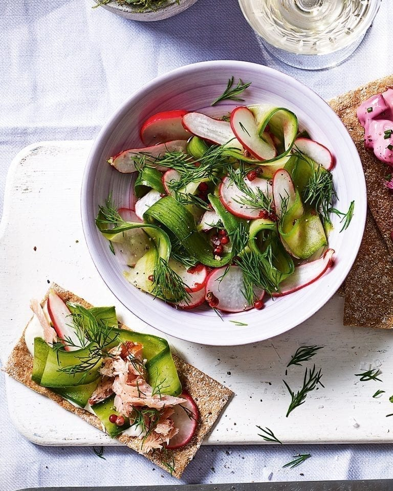

Pink Peppercorn and Vodka Pickle
SERVES 6 AS A SHARING STARTER
5 MIN, PLUS MARINATING
Serve this Scandi-style pickle with rye crisp breads, smoked salmon and extra dill for a bright and beautiful starter.
Ingredients
- 2 tbsp vodka
- 3 tbsp white wine vinegar
- 2 tsp caster sugar
- 1 tsp fine salt
- 2 tsp pink peppercorns
- 1 small bunch finely chopped fresh dill
- 150g finely sliced radishes
- 1 cucumber
Method
In a bowl, whisk together the vodka, white wine vinegar, caster sugar, salt, pink peppercorns and dill until the sugar and salt have dissolved.
Add the radishes and cucumber, peeled into ribbons. Stir, then set aside for 10-15 minutes. Serve scattered with extra dill.